The problem
The emotional context made payment risky
People came during difficult moments, so asking for money at the wrong point would cause friction and could feel exploitative.
Users couldn't say what they were paying for
They understood how Clary worked but not what it was for, and with ChatGPT doing something similar for free, many were already asking why they'd pay.
The cost left almost no margin
AI token costs of €2–7 per user each month against a €4.99 price meant every wrong-fit download was costly, and many early installs came from people who thought Clary was a dating app.
Shaping the brief
Those costs made a free product unviable, and the C-suite's wanted us to prioritise monetisation over retention. UXR had shown onboarding wasn't landing the value proposition, which pulled in the wrong users and fed the acquisition problem, so I proposed a campsite rule, that while we were rebuilding onboarding to add payments we'd leave it better than we found it. Clearer positioning would serve monetisation directly and recover the part of retention that comes from getting the right people in, and leadership agreed.
Goal
The sprint had to answer two questions. What were users actually paying for, and could payment be introduced without breaking trust or crossing into clinical territory?
Success
A paid experience clear enough that around 80% would try it, engaging enough that 50% would return, and valuable enough that 10% would subscribe.
Process
I worked with leadership and the product trio to set the strategy, then facilitated a four-day workshop leading the team on direction, content, and prototyping. We ran three rounds of user testing, mapped MVP scope, and shipped a month ahead of schedule. I used AI to synthesise test session findings into themes between rounds and to draft onboarding copy we could use as a starting point.
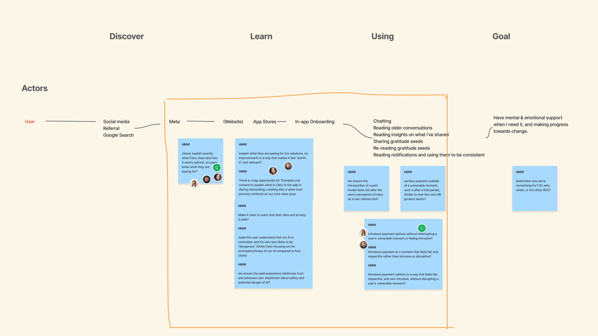
Hypothesis
Filtering for the right users
Problem
Tight margins meant every wrong-fit download was money lost, and too many people arrived expecting a dating app.
Hypothesis
Leading with an intent question rather than a sign-up form would let wrong-fit users drop-off before we paid to onboard them.
What we designed
The initial release put account creation first. We moved an intent question to the start, asking what kind of support someone wanted before anything else, so people who'd misread the product would see the mismatch early while the right users understood the product's intent.
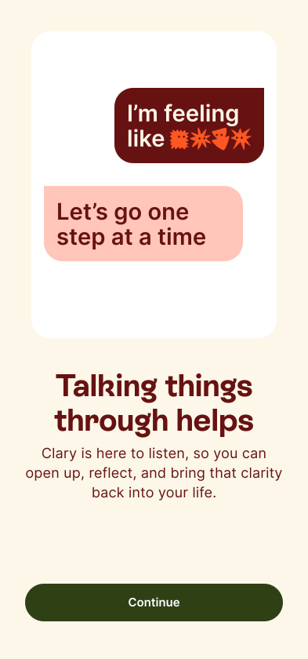
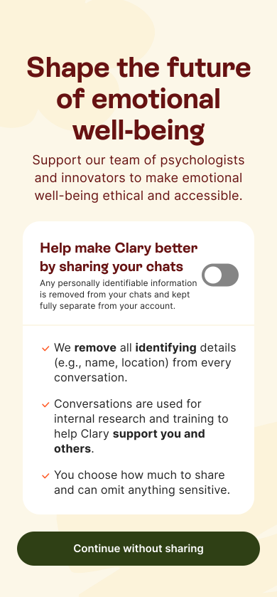
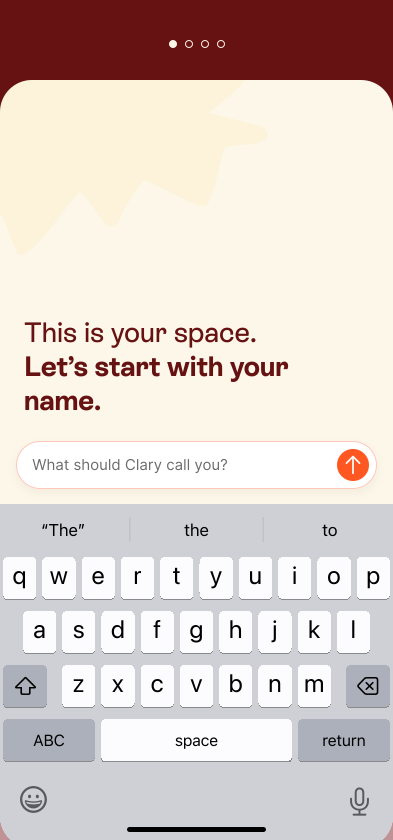
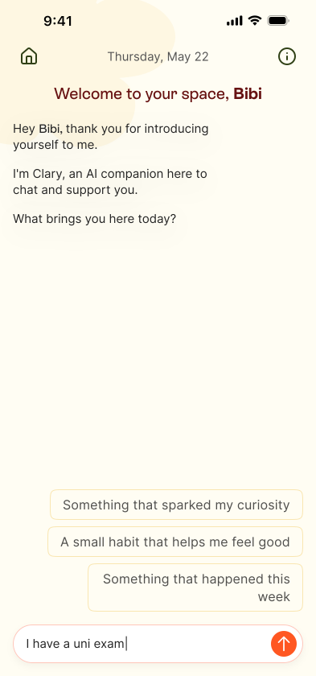
Before: account-first onboarding flow.
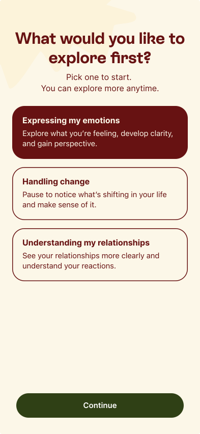
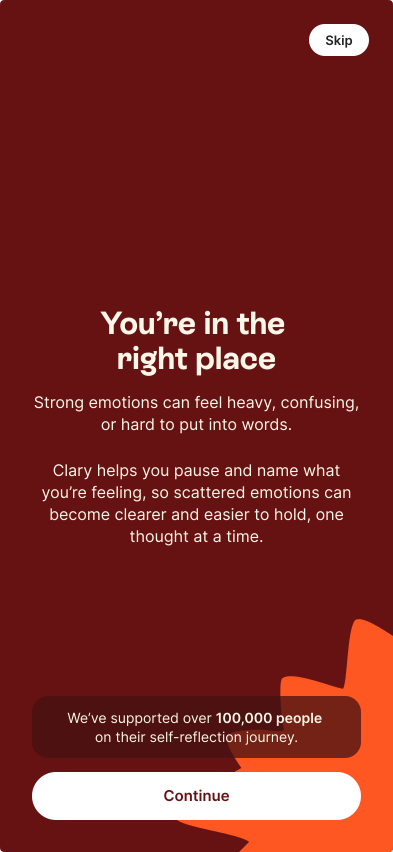
After: opening with an intent question.
What we learned
Intent became the first filter in the funnel rather than something we discovered after paying to acquire someone, so wrong-fit users could opt out before they cost us anything.
Hypothesis
Making the value clear
Problem
Users understood how Clary worked but couldn't say what it was for, which made a price hard to justify.
Hypothesis
Explaining what Clary is, and what it is not, before asking for an account would mean people committed knowing what they were getting.
What we designed
After the intent question, the flow led with the value proposition and “What Clary is/is not” screens. When the CEO pushed to shorten onboarding after an early review, I held the line, since the length covered AI safety, data usage, and clearly defined the scope of the product.
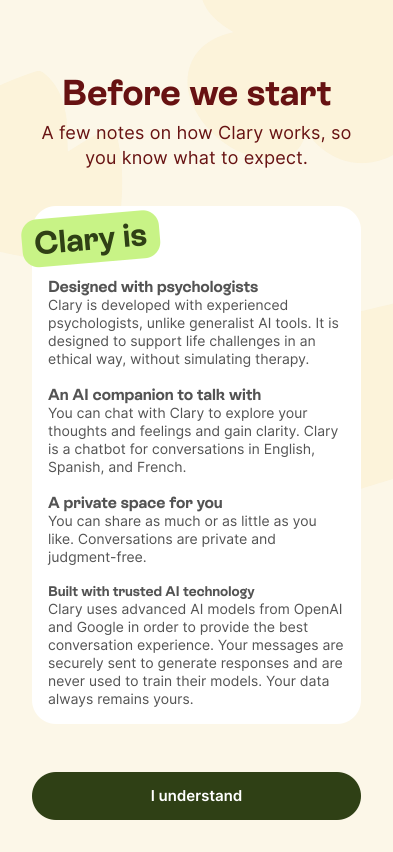
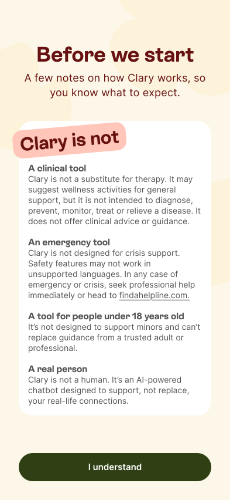
What we learned
Testing made the “What Clary is not” screen the most reassuring moment in the flow, with users saying the transparency built more trust than any other AI product they'd seen. The 89% completion rate after launch justified us keeping the onboarding length.
Hypothesis
A reason to pay over free AI tools
Problem
With ChatGPT doing something similar for free, Clary needed a reason to charge for its service that a general AI couldn't match.
Hypothesis
Positioning Clary on what general AI can't offer, the psychologist grounding plus its own features, would give users a reason to pay.
What we designed
We explained that psychologists shaped the guardrails and reflection frameworks but couldn't access conversations. We also put Clary's own features front and centre, like Reflections and the Gratitude journal, so the reason to pay rested on product differentiators.
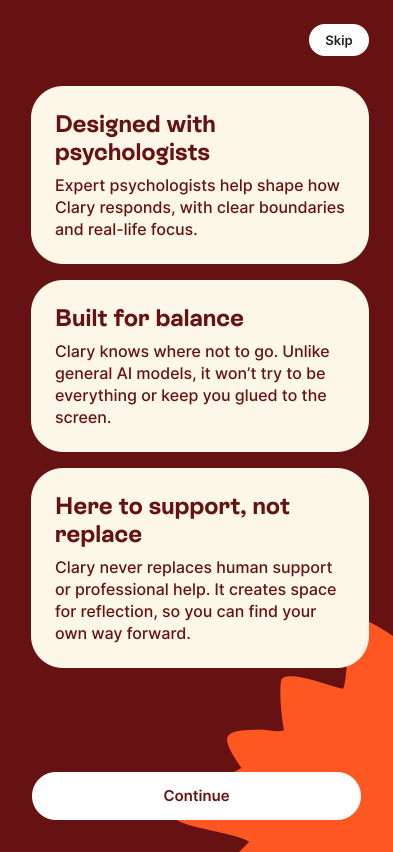
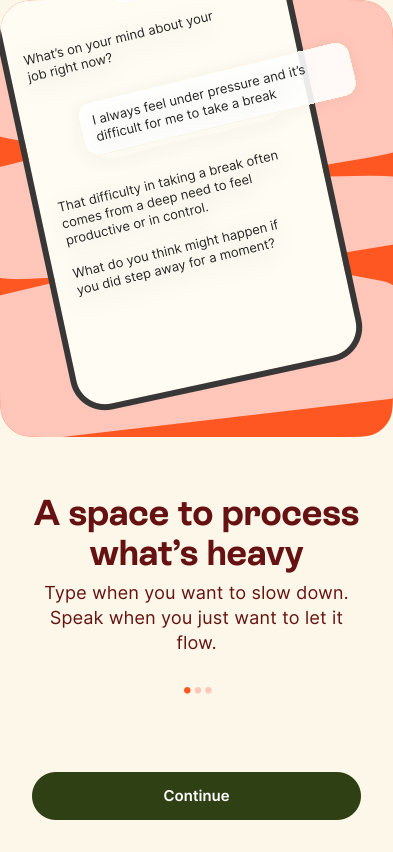
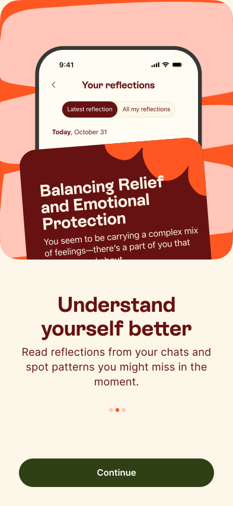
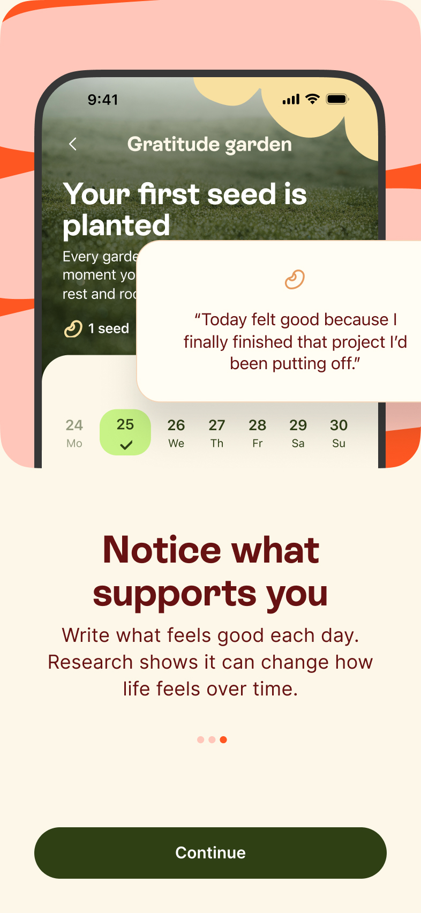
What we learned
It worked to a point. Users read the psychologist grounding as a real differentiator that built trust, but the phrase still promised more than the product delivered. Some expected structured, therapist-led content like guided exercises, which was beyond what this sprint could ship.
Hypothesis
Charging without breaking trust
Problem
People opened Clary in difficult moments, so a conventional paywall risked feeling exploitative.
Hypothesis
Being transparent about the trial and the timing of the first charge would make payment feel safe.
What we designed
We made the trial explicit, with 14 days free, a day 13 reminder before the first charge, and easy cancellation. The 14 days were deliberate, since users needed around 11 messages in a first session to find value, and the day 13 reminder meant the charge never arrived as a surprise during a difficult moment.
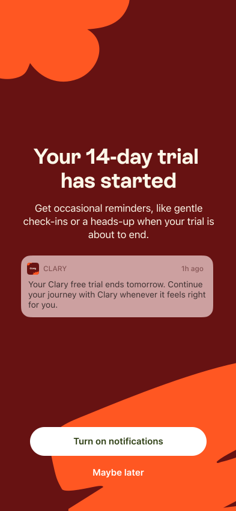
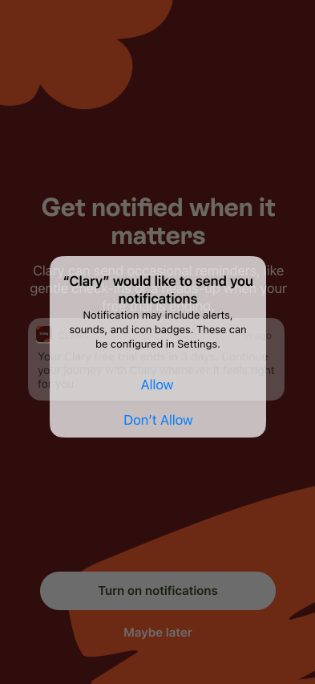
What we learned
In testing, participants named the payment reminder as the reason they'd start the trial, and for a product built on trust, fewer accidental renewals were worth losing some paying users.
Outcome
Onboarding and conversion beat target, but retention did not.
89%
onboarding completion (vs 80% target)
16%
conversion to paid (vs 10% target)
36%
return rate at 11+ messages (4× the baseline)
~9%
week-1 retention, all users (target was 50%)
41%
Sean Ellis PMF score (borderline threshold)
24
NPS (positive)
The product worked for the people who stayed
Users who sent 11 or more messages wrote seven times as much and stayed nine times longer, which was evident from the product-market-fit score. Clary worked for the people got that far. The problem was that 85% of around 11,000 installs left before they reached their aha moment.
What happened next
Conversion and onboarding beat target but retention didn't, so we recommended bringing Clary inside Unobravo, where patients were already engaged, rather than keep paying to acquire users the standalone product couldn't hold. That became the February 2026 decision to integrate it as a between-session companion for therapy patients. I led the integration sprint, where the challenge was cannibalisation, since an AI companion that substitutes for therapy risks undercutting the product it sits inside. That shaped the design contraints:
- No access to therapy session data, architecturally separate
- No therapy imitation, with crisis detection redirecting to emergency services or the patient's therapist
- Cannibalisation rate tracked as a primary KPI alongside session retention
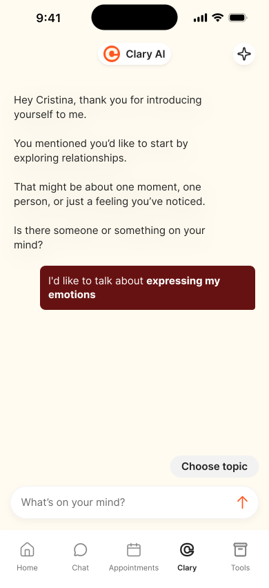
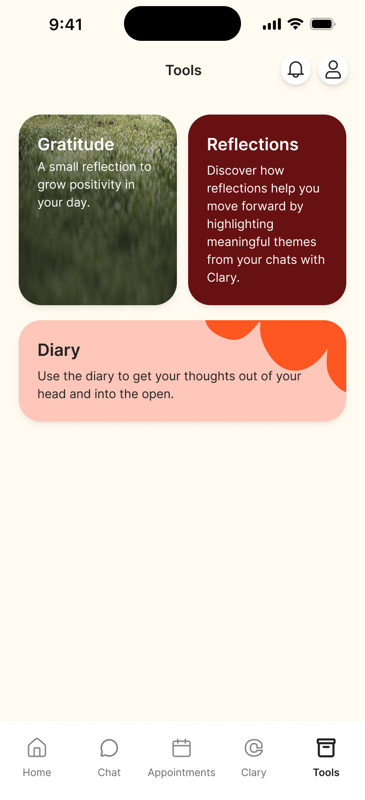
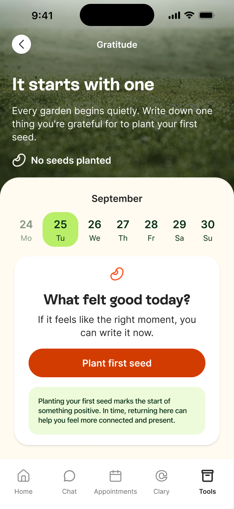
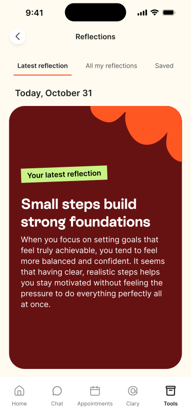
Reflection
Meeting the brief didn't mean the product worked
We hit targets and still recommended moving Clary into Unobravo. People would pay but getting them to come back depended on the first conversation with Clary, and onboarding couldn't solve that.
Designing the wrong users out can be the goal
The intent question and the "What Clary is not" screen were built to turn some people away. A user who misread the product cost us money every month, so more drop-off early showed the designs were working.
What I'd do differently
Engagement was the team's original focus, but high AI token costs made them hard to justify, so we shifted to monetisation. We tried a few conversation changes and couldn't fit them into the sprint. Next time I'd run two streams at once, one improving the first chat and one bringing the token cost down.